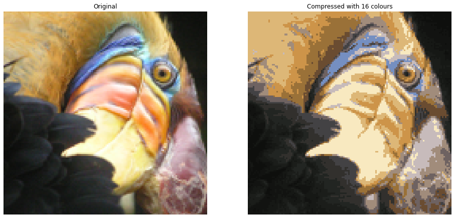

Implementing K-means
The K-means algorithm is a method to automatically cluster similar data points together.
Concretely, you are given a training set \(\{x^{(1)}, ..., x^{(m)}\}\), and you want to group the data into a few cohesive “clusters”.
K-means is an iterative procedure that
- Starts by guessing the initial centroids, and then
- Refines this guess by
- Repeatedly assigning examples to their closest centroids, and then
- Recomputing the centroids based on the assignments.
The \(K\)-means algorithm will always converge to some final set of means for the centroids.
However, the converged solution may not always be ideal and depends on the initial setting of the centroids.
- Therefore, in practice the K-means algorithm is usually run a few times with different random initializations.
- One way to choose between these different solutions from different random initializations is to choose the one with the lowest cost function value (distortion).
find_closest_centroids. * This function takes the data matrix X and the locations of all centroids inside centroids * It should output a one-dimensional array idx (which has the same number of elements as X) that holds the index of the closest centroid (a value in \(\{0,...,K-1\}\), where \(K\) is total number of centroids) to every training example . (Note: The index range 0 to K-1 varies slightly from what is shown in the lectures (i.e. 1 to K) because Python list indices start at 0 instead of 1) * Specifically, for every example \(x^{(i)}\) we set \[
c^{(i)} := j \quad \mathrm{that \; minimizes} \quad ||x^{(i)} - \mu_j||^2,
\] where * \(c^{(i)}\) is the index of the centroid that is closest to \(x^{(i)}\) (corresponds to idx[i] in the starter code), and * \(\mu_j\) is the position (value) of the \(j\)’th centroid. (stored in centroids in the starter code) * \(||x^{(i)} - \mu_j||\) is the L2-norm
def find_closest_centroids(X, centroids):
# Set K
K = centroids.shape[0]
# You need to return the following variables correctly
idx = np.zeros(X.shape[0], dtype=int)
for i in range(X.shape[0]):
# Array to hold distance between X[i] and each centroids[j]
distance = []
for j in range(centroids.shape[0]):
norm_ij = np.linalg.norm(X[i] - centroids[j])
distance.append(norm_ij)
idx[i] = np.argmin(distance)
return idx# Select an initial set of centroids (3 Centroids)
initial_centroids = np.array([[3,3], [6,2], [8,5]])
# Find closest centroids using initial_centroids
idx = find_closest_centroids(X, initial_centroids)
# Print closest centroids for the first three elements
print("First three elements in idx are:", idx[:3])Specifically, for every centroid \(\mu_k\) we set \[ \mu_k = \frac{1}{|C_k|} \sum_{i \in C_k} x^{(i)} \]
where
- \(C_k\) is the set of examples that are assigned to centroid \(k\)
- \(|C_k|\) is the number of examples in the set \(C_k\)
Concretely, if two examples say \(x^{(3)}\) and \(x^{(5)}\) are assigned to centroid \(k=2\), then you should update \(\mu_2 = \frac{1}{2}(x^{(3)}+x^{(5)})\).
def compute_centroids(X, idx, K):
# Useful variables
m, n = X.shape
# You need to return the following variables correctly
centroids = np.zeros((K, n))
for k in range(K):
points = X[idx==k]
centroids[k] = np.mean(points, axis=0)
return centroidsK = 3
centroids = compute_centroids(X, idx, K)
print("The centroids are:", centroids)To randomly initialize centroids
def kMeans_init_centroids(X, K):
# Randomly reorder the indices of examples
randidx = np.random.permutation(X.shape[0])
# Take the first K examples as centroids
centroids = X[randidx[:K]]
return centroidsImage compression with K-means
- In a straightforward 24-bit color representation of an image\(^{2}\), each pixel is represented as three 8-bit unsigned integers (ranging from 0 to 255) that specify the red, green and blue intensity values. This encoding is often refered to as the RGB encoding.
- Our image contains thousands of colors, and in this part of the exercise, you will reduce the number of colors to 16 colors.
- By making this reduction, it is possible to represent (compress) the photo in an efficient way.
- Specifically, you only need to store the RGB values of the 16 selected colors, and for each pixel in the image you now need to only store the index of the color at that location (where only 4 bits are necessary to represent 16 possibilities).
In this part, you will use the K-means algorithm to select the 16 colors that will be used to represent the compressed image. * Concretely, you will treat every pixel in the original image as a data example and use the K-means algorithm to find the 16 colors that best group (cluster) the pixels in the 3- dimensional RGB space. * Once you have computed the cluster centroids on the image, you will then use the 16 colors to replace the pixels in the original image.
# Load an image
original_img = plt.imread('bird.png')
print("Shape of original_img is:", original_img.shape)Shape of original_img is: (128, 128, 3)
As you can see, this creates a three-dimensional matrix original_img where * the first two indices identify a pixel position, and * the third index represents red, green, or blue.
For example, original_img[50, 33, 2] gives the blue intensity of the pixel at row 50 and column 33.
To call the run_kMeans, you need to first transform the matrix original_img into a two-dimensional matrix.
- The code below reshapes the matrix
original_imgto create an \(m \times 3\) matrix of pixel colors (where \(m=16384 = 128\times128\))
X_img = np.reshape(original_img, (original_img.shape[0] * original_img.shape[1], 3))Now, run the cell below to run K-Means on the pre-processed image.
# Run your K-Means algorithm on this data
# You should try different values of K and max_iters here
K = 16
max_iters = 10
# Using the function you have implemented above.
initial_centroids = kMeans_init_centroids(X_img, K)
# Run K-Means - this can take a couple of minutes depending on K and max_iters
centroids, idx = run_kMeans(X_img, initial_centroids, max_iters)Compress the image
After finding the top \(K=16\) colors to represent the image, you can now assign each pixel position to its closest centroid using the find_closest_centroids function. * This allows you to represent the original image using the centroid assignments of each pixel. * Notice that you have significantly reduced the number of bits that are required to describe the image. * The original image required 24 bits (i.e. 8 bits x 3 channels in RGB encoding) for each one of the \(128\times128\) pixel locations, resulting in total size of \(128 \times 128 \times 24 = 393,216\) bits. * The new representation requires some overhead storage in form of a dictionary of 16 colors, each of which require 24 bits, but the image itself then only requires 4 bits per pixel location. * The final number of bits used is therefore \(16 \times 24 + 128 \times 128 \times 4 = 65,920\) bits, which corresponds to compressing the original image by about a factor of 6.
# Find the closest centroid of each pixel
idx = find_closest_centroids(X_img, centroids)
# Replace each pixel with the color of the closest centroid
X_recovered = centroids[idx, :]
# Reshape image into proper dimensions
X_recovered = np.reshape(X_recovered, original_img.shape)